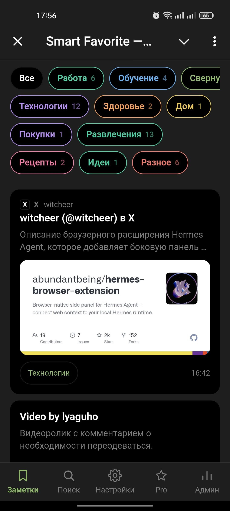
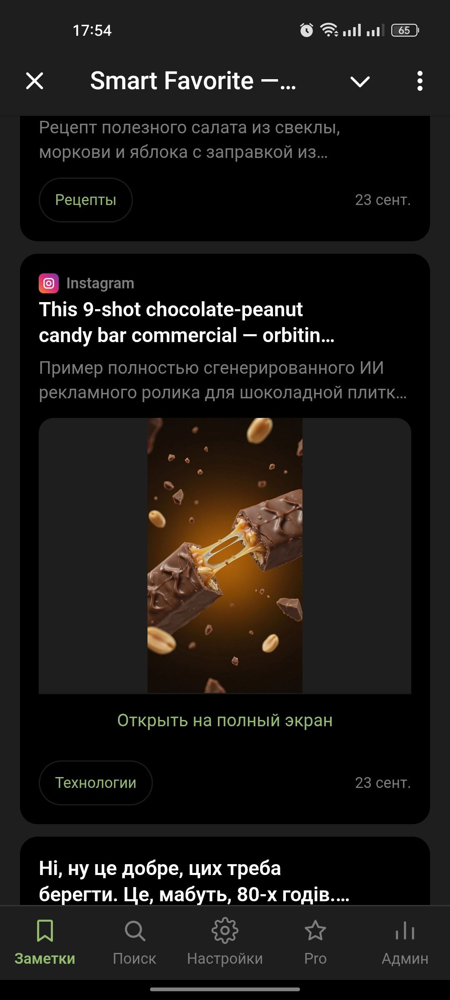
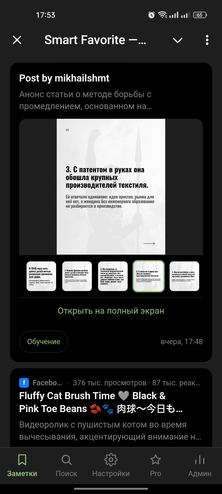
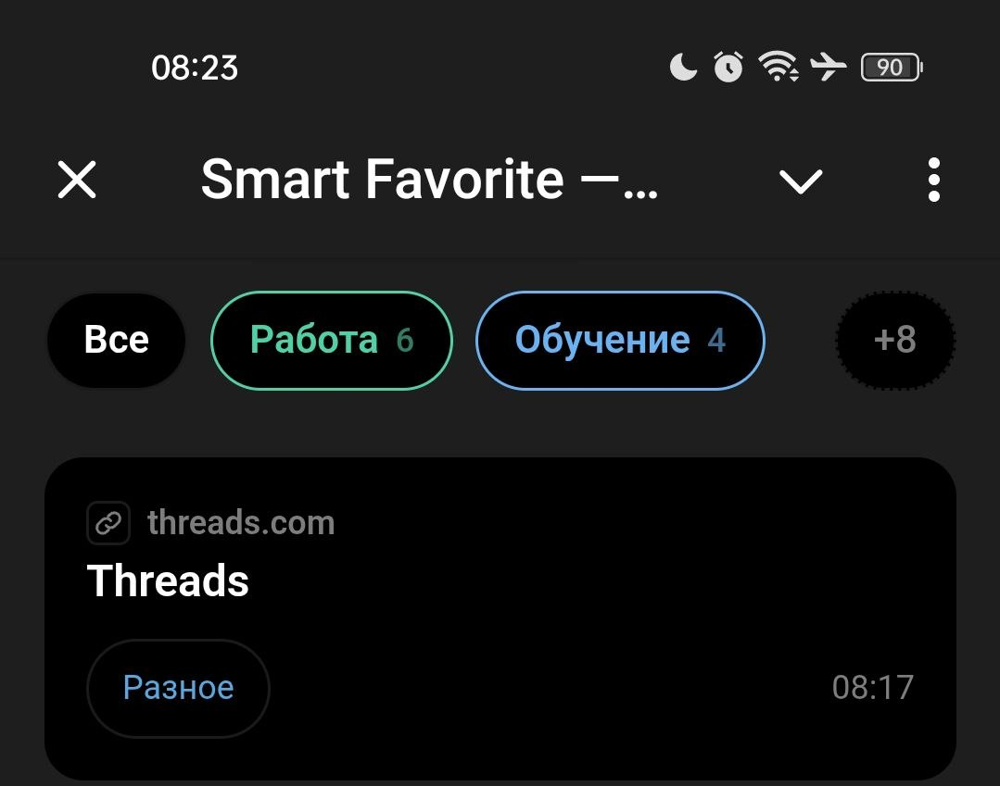

Ссылки — с автором и картинкой
Threads, X, Instagram, YouTube, TikTok, статьи. Бот тянет заголовок, ник автора и превью — даже если страница закрыта и рендерится JS.
Короткие видео сохраняются с обложкой и ссылкой в один клик
Перешли боту ссылку, фото, голосовое или видео. AI разложит по рубрикам, напишет саммари и вытащит текст с картинки. Найдёшь потом обычной фразой — без тегов и папок.

Возможности
Обычное «сохранить в избранное» превращается в структурированную базу: с автором, картинкой, саммари и рубрикой.
Threads, X, Instagram, YouTube, TikTok, статьи. Бот тянет заголовок, ник автора и превью — даже если страница закрыта и рендерится JS.
AI раскладывает заметки по твоему списку и учится на ручных переносах. Перенёс в «Работа» — следующие уедут туда же.
«где тот пост про оптимизацию токенов» — и заметка на месте. Ищется и текст, и саммари, и распознанный текст с фото.
По ссылке на YouTube или TikTok бот предложит кнопками скачать ролик или сделать выжимку. Длинное видео сохранится со ссылкой и обложкой.
Голосовые распознаются и становятся заметкой. С фото бот спросит: распознать текст или сохранить как есть.
«Напомнить» на карточке — в срок придёт сообщение в Telegram. Позвал друга: он сохранил 3 заметки — тебе 21 день Pro.
Витрина
Карточки как в Telegram, только с рубриками, авторами и превью. Скрины из живого мини-приложения — листай в сторону.



Как начать
Ничего настраивать не нужно: бот работает сразу после /start.
Любое сообщение из любого чата — боту. Или ссылку, голосовое, фото, документ.
Саммари, рубрика, автор, картинка. Дубль ссылки не создаст копию — бот назовёт дату сохранения.
Открой мини-приложение или напиши боту /find с обычной фразой. Всё, что когда-то отложили, — в одном месте.
Тарифы
Оплата звёздами Telegram прямо в боте. Pro включается сразу после платежа.
21 день в подарок
Telegram «Сохранённое» на сотни заметок — это свалка, а не база. Перенеси самое нужное туда, где его найдёшь.
Открыть @SmartFavoriteBot